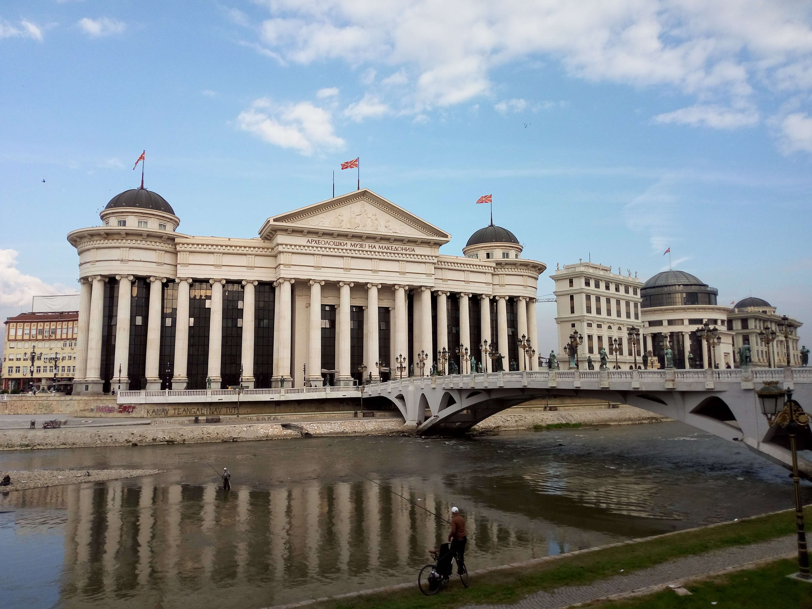

Skopje, North Macedonia
North Macedonia · Skopje
Skopje, the capital and largest city of North Macedonia, is a fascinating destination where different historical periods, cultures, and architectural styles meet. Situated along the Vardar River and surrounded by scenic hills, the city offers a distinctive combination of Ottoman-era heritage, historic churches, lively traditional bazaars, and contemporary urban landmarks. The Old Bazaar, with its narrow streets, historic buildings, and traditional shops, reflects the city's rich cultural past, while the Stone Bridge connects the historic centre with the modern heart of Skopje. The city's diverse architectural character and multicultural atmosphere make it an interesting place to discover the history and identity of the Balkans. This page brings together my personal photographs and travel memories from Skopje.
My Photo Gallery
Explore my personal travel photos from Skopje.
View All Photos ↗